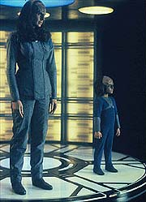
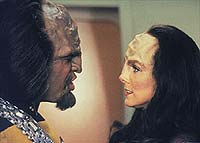
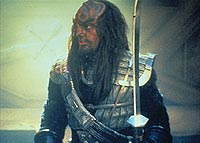
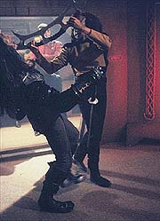

|
MANCHETE
DO EPISDIO
Worf
amadurece, ganha papel ativo e
pode mudar rumos do Imprio Klingon
Episdio
anterior | Prximo
episdio
Sinopse:
Data Estelar: 44246.3.
 A
embaixadora K'Ehleyr, antiga amante meio-klingon, meio-humana de
Worf, chega Enterprise com duas novidades bombsticas: o lder
do Imprio Klingon, K'mpec, foi envenenado e est s portas da
morte, e o garoto que veio junto com ela filho dela com Worf:
Alexander.
K'mpec espera que Picard o ajude no ritual para selecionar o novo lder,
seu sucessor. Aps confirmar a suspeita de que um dos concorrentes
ao cargo foi o responsvel por seu envenenamento, K'mpec
confidencia a Picard que ningum do Conselho Klingon confivel.
Cabe agora a Picard auxiliar K'mpec e o Imprio Klingon nesse
processo de transio. Na disputa pelo poder, Gowron e Duras.
Enquanto pouco se sabe do primeiro, o segundo j conhecido de
longa data, tendo seu pai sido responsvel pela ajuda aos Romulanos
no ataque ao posto Klingon em Khitomer. Embora a desonra devesse
cair sobre ele, o peso foi todo jogado sobre Worf. Mogh, pai do
tenente, acabou sendo acusado de ajudar os Romulanos.
Para proteger o Imprio, Worf decidiu aceitar a culpa de seu pai,
mesmo sabendo que ele era inocente. Como resultado, o Klingon foi
banido por seus pares.
 Quando
K'Ehleyr tenta desvendar a histria por trs do banimento de Worf,
consegue evidncias para incriminar Duras. Por esta razo, ele a
mata. Em uma busca por vingana, Worf assassina Duras, deixando o
caminho livre para que Gowron assuma o comando do Imprio Klingon.
Comentrios:
"Reunion"
um episdio muito especial. Alm de trazer mais um insight
sobre os mecanismos polticos internos do Imprio Klingon, ele
responsvel por consolidar Worf como um personagem importante e
desenvolto no contexto da srie.
Durante as duas primeiras temporadas, Worf em geral no passou de
um figurante. Nas vezes em que aparecia, no conseguia romper a
barreira do "microcrebro", apelido dado ao Klingon por Q
em "Q Who?". O primeiro momento em que o tenente
teve a chance de mostrar seu valor enquanto personagem surgiu s no
terceiro ano, no episdio "The Enemy".
 Na
ocasio, Worf prefere deixar um Romulano morrer a doar uma substncia
em seu sangue que poderia salvar seu inimigo. Dali para frente, o
personagem passou a crescer, atingindo o ponto alto em "Sins
of the Father", o primeiro captulo na saga da trajetria
de Worf entre seus companheiros Klingons. Mas mesmo l, o tenente
foi muito mais uma vtima das circunstncias do que uma pea
ativa e transformadora da vida do Imprio Klingon.
"Reunion" praticamente uma continuao direta
de "Sins of the Father". Mas desta vez, Worf est
ativo na histria. Podemos no episdio verdadeiramente adentrar a
psique do Klingon. Sentimos todo o seu sofrimento e sua fria
quando K'Ehleyr morta, vemos seu comportamento ao buscar vingana
contra Duras e passamos a ver Worf no melhor contexto em que ele
poderia ser usado, como ponto de ligao entre a tripulao da
Enterprise e os Klingons.
A histria perfeita. Alm de dar uma continuidade ao bom
"arco" aberto com o banimento de Worf, ainda apresenta
novos elementos, como a asceno de Gowron chancelaria e a
apario de Alexander, filho de Worf com K'Ehleyr.
 A
evoluo poltica dos Klingons seria tema permanente em Jornada
nas Estrelas. Para o final da quarta temporada, Ronald D. Moore (um
dos roteiristas de "Reunion") preparou a continuao
da saga, no episdio duplo "Redemption",
que entrelaar eventos mostrados em outro clssico da srie, "Yesterday's
Enterprise".
Depois, a situao poltica dos Klingons seria melhor vista em Deep
Space Nine. De qualquer forma, "Reunion" a
semente que consolidou Worf como um personagem no s desenvolto
como extremamente importante para o desenrolar dos eventos no
universo de Jornada nas Estrelas.
Citaes:
K'mpec - "'All
for the glory of the Klingon Empire'... that should be my epitaph."
("'Tudo pela glria do Imprio Klingon'... esse deve ser meu
epitfio.")
Gowron - "That could take hours!"
("Mas isso pode levar horas!")
K'Ehleyr - "Or days, depending on your cooperation."
("Ou dias, dependendo da sua cooperao.")
Trivia:
 O episdio final do 4 ano da Nova Gerao, "Redemption,
Part I", uma continuao direta deste episdio.
O episdio final do 4 ano da Nova Gerao, "Redemption,
Part I", uma continuao direta deste episdio.
Charles
Cooper, que aqui interpreta K'mpec, tambm interpretou o embaixador
Klingon no filme para cinema "Jornada nas Estrelas V - A ltima
Fronteira".
Aqui
temos a estria de um dos mais famosos Klingons de Jornada nas
Estrelas: Gowron. Alm de participar da Nova Gerao,
o personagem ainda visto na srie Deep Space Nine. Assim
como os demais atores que interpretam Klingons neste episdio,
Robert O'Reilly (Gowron) conhecido do pblico da Nova Gerao,
afinal, o ator j havia participado do episdio "Manhunt",
como o personagem Scarface.
Michael
Rider, que interpreta aqui um oficial de segurana annimo, foi
visto como chefe de teletransporte em muitos episdios antes que O'Brien
assumisse o cargo.
At
agora, na Nova Gerao as naves Klingons utilizadas eram as
mesmas dos filmes de cinema. Porm neste episdio temos a estria
de uma nova nave Klingon, o cruzador de ataque classe Vor'cha. Com o
comprimento aproximado de 3/4 da Enterprise-D, a nave reflete a era
ps-aliana com a Federao, graas a suas naceles de dobra ao
estilo da Frota.
Ficha
tcnica:
Histria de Drew Deighan,
Thomas Perry e Jo Perry
Roteiro de Thomas Perry, Jo Perry, Ronald D.Moore e Brannon
Braga
Direo de Jonathan Frakes
Exibido em 05/11/1990
Produo: 081
Elenco:
Patrick Stewart como
Jean-Luc Picard
Jonathan Frakes como William Thomas Riker
Brent Spiner como Data
LeVar Burton como Geordi La Forge
Michael Dorn como Worf
Gates McFadden como Beverly Crusher
Marina Sirtis como Deanna Troi
Wil Wheaton como Wesley Crusher
Elenco convidado:
Suzie Plakson como
K'Ehleyr
Robert O'Reilly como Gowron
Patrick Massett como Duras
Charles Cooper como K'mpec
Jon Steuer como Alexander
Michael Rider como um guarda da segurana
April Grace como chefe de transporte Hubbell
Episdio
anterior | Prximo
episdio
|